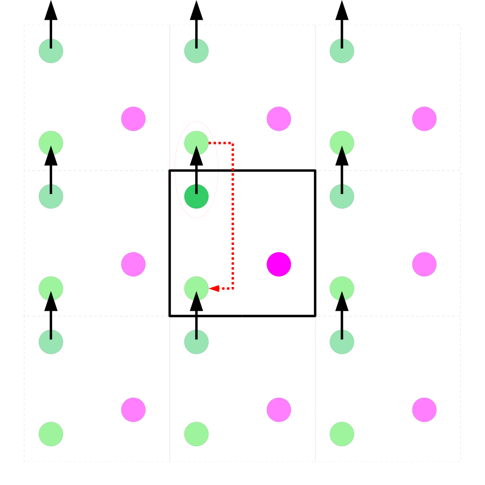

Header2
Strømning av gasser i kompliserte nanoporøse materialer
Anders Hafreager
Computational Physics, UiO
Tredelt arbeid
- Direct Simulation Monte Carlo (DSMC)
- Molekylærdynamikk (MD)
- Visualisering
Presentasjonen
- Motivasjon (utvinning av skifer)
- Strømning
- Målene
- Direct Simulation Monte Carlo (DSMC)
- Molekylærdynamikk (MD)
- Visualisering
- Konklusjon
Energi fra hydrokarboner
Utvinning av skifergass

Hva er en fluid?
Fluiddynamikk
Kontinuum
Navier-Stokes-likningene
Darcy's lov

Darcy's lov
$$ \begin{align} Q &= A\frac{k}{\mu}\frac{P_0 - P_L}{L}\\ \\ \\ \\ \\ A &- \text{Tverrsnittareal}\\ Q &- \text{volumetrisk flowrate}\\ k &- \text{permeabilitet}\\ \mu &- \text{viskositet}\\ P &- \text{trykk} \end{align} $$Darcy's lov
$$ \begin{align} Q &= -\sigma_DA\nabla P\\ \sigma_D &= \frac{k}{\mu}\\ \\ k &= \text{materialavhengig}\\ \mu &= \text{fluidavhengig} \end{align} $$Permeabilitet
$$ \begin{align} k = Q\frac{\mu L}{A\Delta P} \end{align} $$Eksempel 1: strømning i sylinder
 $$
\begin{align}
k = \frac{r^2}{8}
\end{align}
$$
$$
\begin{align}
k = \frac{r^2}{8}
\end{align}
$$
Strømning i porøse materialer
Definere porøst materialePorøsitet
$$ \phi = \frac{\text{Porevolum}}{\text{Totalt volum}} = \frac{V_P}{V} $$Eksempel 2: tilfeldig pakkede kuler
Carman-Kozeny-likningen
$$
\begin{align}
k = \frac{r^2}{9K}\frac{\phi}{(1 - \phi)^2}
\end{align}
\\
K \approx 5
$$
Slip-hastighet
Slip-hastighet
$$ \begin{align} v_\text{wall} &= \alpha\lambda \frac{\text{d}v}{\text{d}n} \qquad (\text{Maxwell}) \\ \\ \\ \lambda &- \text{midlere fri veilengde}\\ \alpha &- \text{konstant} \end{align} $$Midlere fri veilengde
$$ \begin{align} \lambda = \frac{m}{\sqrt{2}\pi d^2\rho_n} \end{align} $$Klinkenbergeffekten
$$ \begin{align} k_a &= f_\text{Kl}k_\infty = \left(1 + 4\alpha\frac{\lambda}{L}\right)k_\infty\\ \\ \\ \\ k_a &- \text{Tilsynelatende permeabilitet}\\ k_\infty &- \text{Absolutt permeabilitet} \end{align} $$Knudsentallet
$$ \begin{align} \text{Kn} &= \frac{\lambda}{L}\\ k_a &= \left(1 + 4\alpha\text{Kn}\right)k_\infty \end{align} $$Knudsenkorreksjon
Anta høyereordens slip-hastighet $$ \begin{align} k_a &= f_\text{Kn}k_\infty = \left[1 + \alpha(\text{Kn})\text{Kn}\right]\left[1 + \frac{4\text{Kn}}{1 + \text{Kn}}\right] \end{align} $$Knudsenkorreksjon

Kontinuumshypotesen
Hovedmål
- Utvikle MD-kode
- Utvikle DSMC-kode
- Utvikle visualiseringsverktøy
- Studere hvordan permeabiliteten blir påvirket av slip-hastighet
MD- og DSMC-kode
- Enkle å bruke
- Parallelliserte
- Vilkårlige geometrier
Visualisering
- Effektiv
- Enkel kamerastyring
Molekylærdynamikk
- System med volum V
- N atomer
- $$\text{Faserommet} (\vec q, \vec p)$$
- $$\vec F = -\nabla U(\vec q)$$
Lennard-Jones
$$ U(r) = 4\epsilon\left[\left(\frac{\sigma}{r}\right)^{12} - \left(\frac{\sigma}{r}\right)^6\right]$$
Tidsutvikling
Integrerer Newtons bevegelseslover med Velocity Verlet $$ \begin{align} \vec v(t + \Delta t/2) &= \vec v(t) + \frac{\vec F(t)}{m}\frac{\Delta t}{2}\\ \vec r(t + \Delta t) &= \vec r(t) + \vec v(t + \Delta t/2)\Delta t\\ \vec v(t + \Delta t) &= \vec v(t + \Delta t/2) + \frac{\vec F(t+\Delta t)}{m}\frac{\Delta t}{2}\\ \end{align} $$Periodiske randbetingelser
$$ r_i + L_i = r_i $$ Fysiske størrelser
-
$$
\begin{align}
E &= \left(\sum_{i=1}^N \frac{1}{2}m_iv_i^2\right) + U(\vec q)\\
T &= \frac{2E_k}{3Nk_B} \text{(ekvipartisjon)}\\
\rho_n &= \frac{N}{V}
\end{align}
$$
Måle permeabilitet
$$\begin{align}k &= \frac{Q\mu L}{A\Delta P}\\ \\\\ \\\end{align}$$ $$\mu \text{ kan måles med en Green-Kubo-relasjon eller}\\ \text{regnes ut med kinetisk teori.}$$Mangler ∆P
$$ \begin{align} F &= \Delta y\Delta z\Delta P\\ F &= mg = \rho_m\Delta V g\\ g &= \frac{\Delta P}{\rho_m \Delta x} \end{align} $$
Størrelse av trykkdifferanse
Ideell gass $$ P_0 = \rho_n k_B T\\\\ $$ Velger ∆P ≈ 0.05P0Ufysisk oppførsel

Måle permeabilitet
$$\begin{align}k &= \frac{Q\mu}{Ag\rho_m}\\ \\\\ \\\end{align}$$Vilkårlige geometrier
En fluid må- være fanget i et subset av hele volumet
- realistiske interaksjoner med veggen
- bli tappet for energi
En enkel modell
Geometrien er beskrevet av en funksjon (vegg, true/false) $$ \begin{align} G : \mathbb{R}^3\rightarrow \{1,0\} \end{align} $$Eksempel 2: sylinder med radius R i z-retning $$G(x,y,z) = (x^2 + y^2 > R^2)$$
En enkel modell
Hvert atom i i veggen får i tillegg etharmonisk oscillator-potensial om et likevektspunkt qi $$ \begin{align} \vec F^\text{vegg}(\vec r_i) = -k(\vec r_i - \vec q_i) + \vec F_i \end{align} $$
- Realistiske krefter
- Tillater vibrasjoner
- Har en temperatur
- Kan tømme for energi
Resultater
Direct Simulation Monte Carlo
- Stokastisk modell
- System med volum V
- M partikler, hver representerer Neff atomer
- $$\text{Faserommet} (\vec q, \vec p)$$
Tidsutvikling
- Deler opp tidssteg i to deler, flytting og kollisjoner
- Krav på tidssteg: ∆t < τcoll
$$\tau_\text{coll} = \frac{\lambda}{\langle v \rangle} \propto \frac{1}{\sqrt T \rho_n}$$
Tidsutvikling - flytting
Bruker Eulermetoden$$\vec r_i(t+\Delta t) = \vec r_i(t) + \vec v_i(t)\Delta t$$
Tidsutvikling - kollisjoner
- Antar hardsphere-partikler - O(N2)
- Deler inn i kollisjons-celler
- Stokastiske, binære kollisjoner
- Mcoll(ρ, ⟨vrel⟩, ∆t)